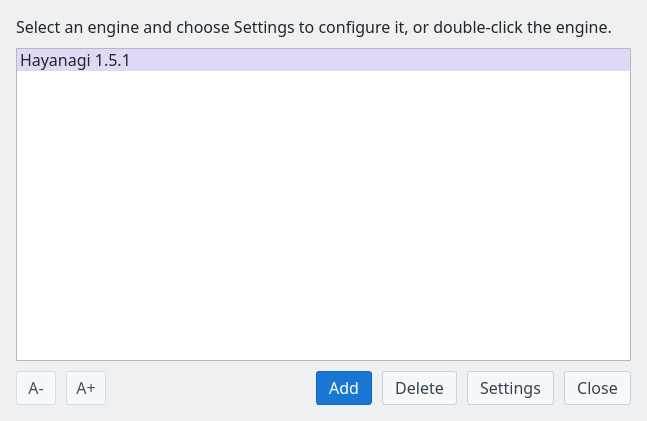
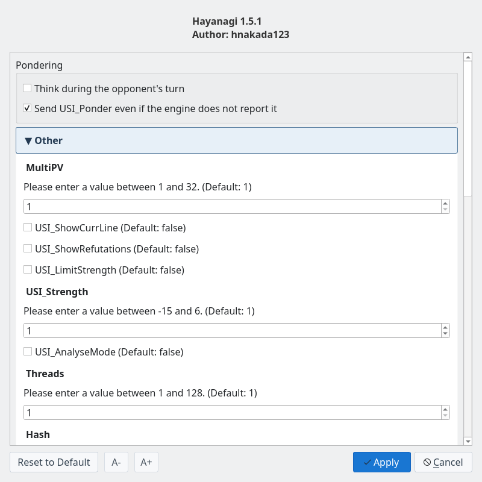

Hayanagi Shogi Engine
From games and analysis to defending in tsume shogi
Screenshots were captured on Linux with the English interface.
What Is Hayanagi?
A C++17 shogi engine that works with ShogiBoardQ
Hayanagi is a shogi engine that supports the USI protocol, which shogi GUIs use to exchange moves and search results. It is managed as a Git submodule of ShogiBoardQ, and the same source builds both the executable for regular games and the library embedded for tsume shogi.
| Use | What it does / setup |
|---|---|
| Register as a USI engine | Use it for games, game analysis, consideration, and mate search. Register the executable in Engine Registration. |
| Built into Tsume Shogi Play | It judges problems and plays the defender's replies. It is built into ShogiBoardQ, so no registration is needed. |
The source code and detailed specifications are on the Hayanagi GitHub repository. This page describes Hayanagi 1.5.1, the version used as the submodule.
Games and Strength
Supports main time, byoyomi, increments, and pondering on the opponent's turn. Limit the search to adjust its strength.
Consideration and Analysis
Reports scores, principal variations, search depth, and node counts. MultiPV compares several candidate moves.
Book and Game Rules
Reads opening books in YaneuraOu's DB2016 format and uses its own book built from Floodgate games. It also handles repetition, perpetual check, impasse, and entering king rules.
Dedicated Mate Search
Searches for forced mates by consecutive checks. It handles positions without the attacker's king and, as the defender, returns the longest resistance or an escape.
Using It in ShogiBoardQ
For regular games and consideration, register the USI engine executable
Get the Executable
In the Linux ZIP, use Hayanagi/hayanagi in the extracted folder; it is not included inside the AppImage itself. The Windows and macOS packages do not include it at present, so build it from source.
When you build ShogiBoardQ from source, build/Hayanagi/hayanagi is created. On Windows the name ends in .exe, and depending on the build system it may be in a subfolder such as Release. To build only Hayanagi, see Building from source. On Linux and macOS, choose a file with execute permission.
Register It
Choose Settings → Engine Settings… to open Engine Registration, click Add, and select the Hayanagi executable. Registration is complete when Hayanagi 1.5.1 appears in the list.

Engine Registration: Hayanagi 1.5.1 appears in the list
Click Settings (or double-click the engine) to change options such as threads and strength. For step-by-step screenshots, see the engine registration guide.
Select It for Games and Analysis
Choose Hayanagi as a player in game setup for a human vs. engine or engine vs. engine game. Also select it as the engine in Consideration Mode and Game Analysis.
To solve tsume shogi on the board, choose Game → Play tsume shogi…. Select Hayanagi (built-in, up to 31 plies) for Mate solver in the problem list to start without registering an engine. See the Tsume Shogi Play guide.
Main Engine Options
Adjust the options of a registered USI engine for your purpose

Engine Settings: change Pondering and the options Hayanagi reports
| Option | Description |
|---|---|
Threads | Number of search threads. Default 1, range 1–128. Set it according to your CPU and other work. |
Hash / USI_Hash | Memory (MB) for remembering positions in the regular search. Both set the same table; the default is 16 MB. |
MultiPV | Number of candidate moves to output. The engine supports 1–32. ShogiBoardQ's consideration uses its Candidate moves setting. |
USI_Ponder | Thinking on the opponent's turn. Off by default. Switch it with Think during the opponent's turn under Pondering in Engine Settings. |
USI_LimitStrengthUSI_Strength | When strength limiting is on, a value from -15 to 6 limits search depth and nodes. Negative values approximate kyu ranks, positive values dan ranks, and 0 is treated as 1-kyu. Strength limiting is off by default. |
USI_AnalyseMode | Analysis mode. Disables strength limiting, instant book moves, automatic resignation, and ponder requests. Specify unlimited search time separately. |
USI_OwnBookBookDir / BookFile | Whether to use an opening book and which file to read. On by default, reading book/hayanagi_book.db next to the executable (set BookFile to no_book to disable it). Building from source places the book in the build folder. The release packages do not include a book, so the engine then plays by search alone. |
EnteringKingRule | When the engine itself declares an entering king win. Choose the 24-point, 27-point, or try rule and others; the default is CSARule24. ShogiBoardQ judges the declaration under the Jishogi rule chosen in the game dialog. |
The dan and kyu levels are rough guides before calibration by games and may not match human ranks. Hayanagi is a minimal engine with a simple evaluation of material, piece activity, king safety, and more.
This table is for registered USI engines. The built-in judge in Tsume Shogi Play uses Mate solver and Search time in the problem list, and Search time in the play window.
Mate Search and Tsume Shogi Play
Distinguishes mate, no mate, and undetermined, and finds attacking and defending moves
| Use | Behavior |
|---|---|
| Mate Search | Asks the registered Hayanagi to search with standard USI go mate. When a mate is found, it returns the full line including the defender's longest resistance. |
| Tsume Shogi Play | The built-in Hayanagi judges the problem and plays the defender's reply to each of your checks. If you miss the mate, it shows the escape. |
| Tsume Position Generator | The built-in Hayanagi screens candidate positions in advance. You can also choose a registered Hayanagi as the USI engine that confirms mates. |
Standard USI go mate searches up to 63 plies; the built-in check of the starting position in Tsume Shogi Play goes up to 31 plies. Timeouts and reaching the search limit are distinguished from proving that there is no mate.
Because the search is depth-first, long problems (roughly 15 plies or more) can take time. For long problems, choose a separately registered KomoringHeights for Mate solver in the problem list (when it is registered, it is selected the first time you open the list). Hayanagi still plays the defender's replies, choosing among them by KomoringHeights' mate lengths.
Building from Source
Build it together with ShogiBoardQ, or build Hayanagi alone
Build with ShogiBoardQ
Run these in the root of the ShogiBoardQ repository. After fetching the submodules, a normal build creates both the app and Hayanagi.
git submodule update --init --recursive
cmake -B build -S . -DCMAKE_BUILD_TYPE=Release
cmake --build build --config ReleaseFor Qt and other prerequisites, see the per-OS guides under Build from source. In a typical Linux or macOS build, register build/Hayanagi/hayanagi. The book is placed at build/Hayanagi/book/hayanagi_book.db.
Build Hayanagi Alone
After fetching the submodules, run the following in the root of the ShogiBoardQ repository. Hayanagi alone does not depend on Qt; it needs CMake 3.16 or later and a C++17 compiler.
cmake -S Hayanagi -B build-hayanagi -DCMAKE_BUILD_TYPE=Release
cmake --build build-hayanagi --config Release
./build-hayanagi/hayanagi --versionThe last command is for Linux and macOS and prints Hayanagi 1.5.1. On Windows, run hayanagi.exe in the output folder. For USI commands, how the search works, tests, and the change history, see the Hayanagi README (in Japanese).